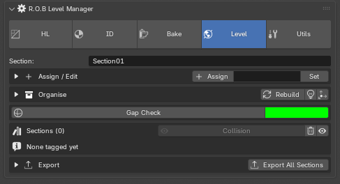
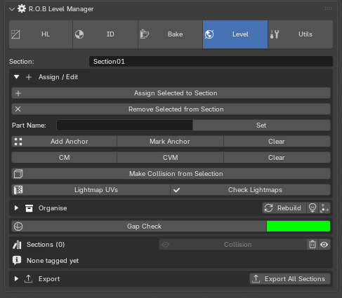
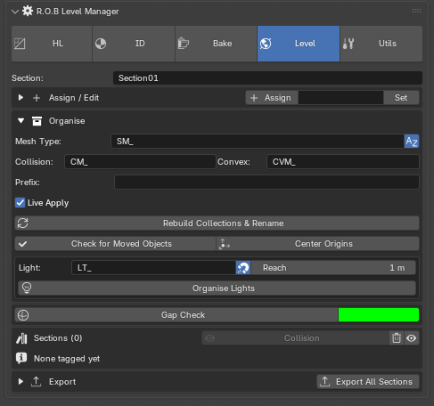
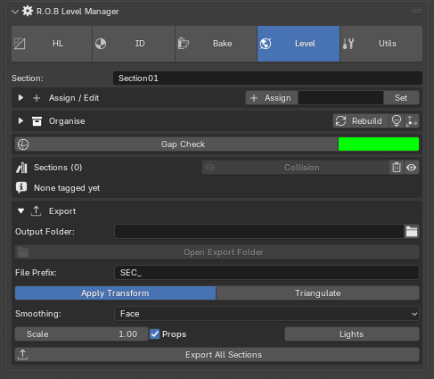

Level Manager¶
Cuts an environment into named sections, keeps each one's meshes, collision and naming in order, and exports one Unity-ready FBX per section.
Sidebar (N) → R.O.B Tools tab → Level.

The idea¶
A level is too big to be one FBX and too connected to be one object per file.
So it is cut into sections — ClockTower, Courtyard, Gatehouse — and each
section becomes one FBX carrying its meshes and its collision together.
Objects are tagged with a section rather than moved by hand. The tag is what everything else reads: the collection tree, the naming, the export, and the moved-object check. Rebuild can therefore be run at any time and will put everything back where it belongs.
The Section field at the top is the active section — the one Assign adds to.
Assign / Edit¶

Closed, the header carries the three things used constantly: Assign, the part name field, and Set. The rest is setup, used while a section is being built and not once it is running.
Assign Selected to Section tags the selection with the active section and captures each object's transform — that snapshot is what the move check later compares against.
Remove Selected from Section frees just those objects: the tag is cleared and they drop out of the section's collection. The meshes stay.
Part Name + Set renames the trailing part of the selected objects —
Wall → Window — without touching the type prefix.
Anything tagged to a different section is moved into the one in the Section box first, so duplicating a mesh out of one section and naming it a part of another lands where the box says. Leave the Section box empty to rename in place, which is what a plain part rename inside one section wants.
An anchor rides in every section's FBX, at its true world position.
Every section then has the same cube at the same spot, so in Unity you can
vertex-snap (V) one section's ANCHOR onto another's to line the
sections back up after moving or re-importing one — then untick the
ANCHORs.
- Add Anchor drops a 1 m cube named
ANCHORat the 3D cursor. - Mark Anchor makes the selected mesh the anchor — your Unity reference cube, say. A mesh, not an empty: snapping needs vertices.
- Clear un-marks it.
Anchors live in _References and stay out of the sections and the move
check. Hide one in Blender if it is in the way — hidden or not, it is
exported.
Note
Earlier versions had Mark Reference, which kept an object out of the export entirely. Objects marked that way stay out; Clear un-marks them too.
CM / CVM mark the selection as collision. Concave (CM_) and convex
(CVM_) are named with their prefix, sorted into a _Collision
sub-collection, and exported inside the same section FBX so they can be
wired up in Unity. Clear turns them back into normal render meshes.
Note
The two collision buttons are labelled with your own prefixes, so if you
change CM_ to UCX_ the buttons say so.
Collision is listed under the part it is for. Fold a part open and its collision pieces are underneath; the Collision row at the bottom lists only the pieces that are not for any one part. This is only where the panel lists them — every piece still lives in the section's one Collision collection and exports from there.
On every part and Collision row, + files the selection in as a render mesh and the cube adds it as collision, opening CM – concave / CVM – convex:
- A part's cube marks the selection as collision for that part.
- The Collision row's cube marks it as loose collision in that section.
- Make Collision goes to the section and part of the mesh it is made from — whatever the Section box says — so collision built from a piece lands in that piece's section, under its part. Only a mesh in no section uses the Section box. With a selection spanning sections, the active mesh decides and the report says so. It is named after that part too — the Part Name box is ignored for a mesh in a section; only a mesh in no section takes its name from the box (or its own name, with the box empty). Rebuild uses the remembered part to find its source again.
- Marking a render mesh that already belongs to a part (a duplicate of the piece it collides for) keeps it with that part.
- A piece named after a part (
CM_…_WarTower_1) counts as that part's.
To move a loose piece under a part, select it and use that part's cube.
"Collision" is never a part name — Assign and Set refuse it and point you to the cube, because a part called Collision would sit in the collision list as a render mesh.
A collision piece with a live decimate shows a Planar | Collapse switch beside its dial:
- Planar (the default) merges flat faces within an angle and never moves the outline — right for walls, stairs and gates.
- Collapse thins by a ratio, starting at half the faces. It gets rounded things — rocks, rubble — far lighter than Planar can, but it moves vertices, so check the outline still fits before you Apply.
The choice is per piece, survives a Rebuild, and switching back to Planar lands on the angle you had.
Tick Tri at the start of the dial row and Apply triangulates the piece too, straight after freezing the decimate — Quad and N-gon both set to Beauty. It is per piece, off until you tick it, and kept through a Rebuild.
Lightmap UVs copies each selected mesh's first UV map into a Lightmap
UV map in its second slot — the one Unity bakes lightmaps into (uv2).
Lightmapbecomes the active UV map, so the UV Editor shows it and your edits — pulling overlapping islands apart, say — go into it. Your texture UVs stay the render map, so materials still map by them.- Press it again to re-copy after changing the texture UVs. If a
Lightmapno longer matches itsUVMap— you have edited it — it asks before copying over it. - Collision is skipped, and so is a mesh with no UV map to copy. A mesh whose second UV map is already something else is skipped and named in the report — Unity would bake into that one.
- Unity wants lightmap UVs inside the 0–1 square and not overlapping. The report names any mesh whose UVs go outside the square (a tiling trim sheet, say). Overlapping islands — mirrored or stacked pieces — it cannot see: those share lightmap texels and bake with each other's light.
Check Lightmaps, beside it, answers have we done them all? It goes over
every mesh in every section (collision not counted) and reports how many have
a Lightmap map in the second slot inside the 0–1 square, which sections
still have some to do, and why:
- missing — no second UV map at all.
- not in slot 2 — the second map is something else, or
Lightmapis not second. Unity bakes into whatever is second. - outside the 0–1 square — Unity will not bake it cleanly.
It selects the meshes still to do, so the next press can be Lightmap UVs on exactly those (it fills the missing ones; the other two need a look). Hidden meshes are counted but cannot be selected.
Note
In Unity, leave Generate Lightmap UVs unticked on the model's import settings, or Unity replaces these with its own.
Organise¶

Prefixes are typed once per project; Rebuild and Center Origins are pressed all day — so those two are what the closed header shows.
Rebuild Collections & Rename sorts every tagged object into
LevelManager → SEC_<section> → <asset> and applies the naming convention.
Run it whenever things have drifted.
| Field | What it does |
|---|---|
| Mesh Type | Asset-type prefix on mesh names, SM_ for Static Mesh |
| Collision / Convex | The two collision prefixes |
| Prefix | An extra prefix in front of everything, object names and FBX files. Usually blank |
| Rename on Organise | Whether Rebuild renames as well as sorts |
| Live Apply | Move and rename immediately on assign, rather than waiting for Rebuild |
A trailing underscore is added to every prefix automatically — type SM, get
SM_.
Check for Moved Objects compares each object's current geometry centre against the one captured when it was tagged, and flags what actually drifted. This is the cause of pieces landing in the wrong place in Unity. Editing an origin does not trip it — only the geometry moving does.
Center Origins (Bounds) sets the selected meshes' origins to their bounding-box centre. The geometry does not move, so Unity placement is unchanged; it just gives each piece a sensible pivot to drag by.
Lights¶
Lights are filed like meshes, on their own track. Assign takes a
selected light the same way it takes a mesh: it goes to the section's own
SEC_<section>__Lights collection and is named with the Light prefix —
LT_BakeUnit_OvenGlow. Rebuild keeps them sorted and named from then on.
Organise Lights (the lamp on the closed header too) files every light in the scene in one press:
- A light that already has a section stays in it.
- One without is given the section whose geometry it sits in or beside — Nearest Section, measured to the actual faces, not the bounding box, so the glow in front of an oven door goes to the oven rather than to the room it stands in. Only within Reach.
- A sun, and anything further than Reach from every section, is lighting
the whole level. It goes to
LevelManager → _Lighting, named with the prefix but no section, and never rides in a section's FBX.
Organise Lights ignores the Section box — position decides. When a press
sends a light to _Lighting because it was out of Reach, the report names it,
with the section it was nearest and how far off it was — a lamp hung in the
middle of a room is metres from every surface. To put one in a section
anyway, select it and press Assign Selected to Section.
| Field | What it does |
|---|---|
| Light | Prefix on light names, LT_ |
| Nearest Section | Whether Organise Lights places section-less lights by position. Off, they all go to _Lighting |
| Reach | How close to a section's geometry a light must be to count as its |
Assign a light by hand to overrule where Organise Lights would put it; a light with a section is never moved by it.
Gap Check¶
Gap Check puts a glowing sphere around the level with its faces turned inward. From inside, every gap — a missing face, a seam that does not quite meet — shows as a patch of the swatch's colour. Recolouring the sky does not do this: the sky tints everything, the sphere only shows through holes.
- It sizes itself to the tagged sections (a quarter bigger than their corners), centred on them. With nothing tagged yet it fits every mesh in the scene.
- Base, emission and viewport colour all match at emission strength 1, so a gap reads as one flat colour in Material Preview, Rendered, and Solid. Change the swatch and it recolours live — pick a colour nothing in the level uses.
- From outside, the sphere is invisible (its faces point in and backface culling hides them), so you can still orbit the level.
- It casts no shadow, cannot be clicked on in the viewport, lives in
LevelManager → _GapCheck, and is never exported.
Press it again to take the sphere away; press it once more to refit it after the level has grown.
Sections¶
The list of what exists, with a count per section.
Each row: an eye, the section name (press it to make it active — no retyping), Solo to hide every other section, select, export this one, and remove.
Select picks that row's meshes in the viewport. Shift-click adds to the current selection; Ctrl+Shift-click widens by one level — a piece reaches its collection, a collection reaches its section, a section reaches the level.
If everything on the row is hidden, select reveals it first rather than refusing: you asked for those meshes by name, and the add-on is what hid them. A row with only some of its meshes hidden still selects just what is showing, so a section click does not drag a deliberately hidden Collision back into view. The button greys out outside Object Mode.
Remove Section (the row's X) asks first. By default it un-assigns rather than deletes: the tag is cleared and the section drops out, and the meshes stay in your scene. Tick Also delete the meshes in the dialog to delete them instead — collision included, and Ctrl+Z brings them back. The tick never carries over: every dialog opens on keep.
A row with lights says so: BakeUnit (9 + 2 lights). Removing a section
frees its lights along with its meshes (or deletes them, with the dialog's
box ticked).
The eye at the top right of the box un-hides everything in every section — the sections, their parts, Lights and Collision, and pieces hidden one by one or by Solo, whether by the eye, Exclude or the monitor. The Gap Check sphere and anchors are left as they are. Collision, beside it, shows or hides the Collision collection in every section at once — it hides them all if any are showing, so a mixed level comes out consistent in one click.
Lights, beside that, does the same for every section's Lights and the
scene-wide _Lighting — appears once Organise Lights has filed any.
Scale Ref appears beside it when the scene has R.O.B Tools' Scale Ref collection, and shows or hides the scale characters. It is the same switch as the eye in Tools, so the two always agree. Levels without one never see it.
Export¶

One Unity-ready FBX per section, written to the output folder. The button stays on the header when the box is shut, because the folder and the flags are set once per project and the button is the section.
| Setting | Notes |
|---|---|
| Output Folder | Where the FBX files go. The field's own button browses for a folder |
| Open Export Folder | Opens that folder in your file browser, creating it first if needed |
| File Prefix | On the filenames, e.g. SEC_ClockTower.fbx |
| Apply Transform | Bakes the Blender→Unity axis conversion so pieces import upright |
| Triangulate | Triangulate on export |
| Smoothing | Face suits most Unity assets; Normals Only for smoothed organics |
| Scale | Leave at 1.0 for Unity |
| Props | Writes the rlm_* tags, including the original name, into the FBX |
| Lights | Includes each section's lights in its FBX. Off by default. _Lighting never exports. Unity reads them with Import Lights ticked |
Collision meshes ride inside their section's FBX. Reference objects never export.
A section, start to finish¶
- Type a name in Section.
- Select the meshes, press Assign.
- Select the collision shapes, press CM or CVM.
- Press Rebuild to sort and name everything.
- Set the output folder once, then Export All Sections.
From there it is Assign and Rebuild as the level grows, with Check for Moved Objects before an export if pieces have been nudged around.